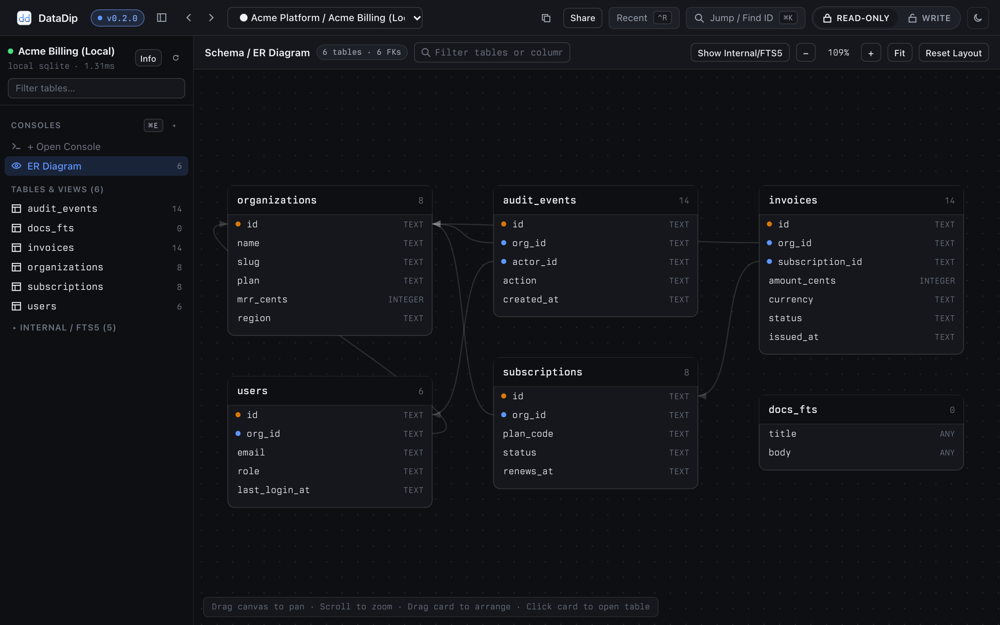

NEW
Interactive Schema / ER Diagram
See your entire relational graph in pure SVG (/c/:id/er). Drag table cards to arrange,
pan and zoom smoothly, hover any table to illuminate its foreign-key neighborhood, and click any card
to jump straight into its rows.